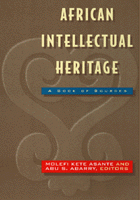

<body bgcolor="#FFFFFF" text="#000000" link="#0000FF" vlink="#CC0000" alink="#CC0000"><center><hr width="350" size="1" align="center" noshade>This comprehensive volume brings together documents from the richly textured intellectual history of Africa and the diaspora<hr width="350" size="1" align="center" noshade><p><a href="https://cdcshoppingcart.uchicago.edu/Cart/ChicagoBook.aspx?ISBN=9781566394024&&PRESS=temple" target="_top">Buy this book!</a> | <a href="https://cdcshoppingcart.uchicago.edu/Cart/Cart.aspx?PRESS=temple" target="_top">View Cart</a> | <a href="https://cdcshoppingcart.uchicago.edu/Cart/Cart.aspx?PRESS=temple" target="_top">Check Out</a></p><p></p></center><!--none//--><h1>African Intellectual Heritage</h1>
<H2>A Book of Sources</H2>
<h3>edited by Molefi Kete Asante and Abu S. Abarry</h3>
<P>cloth 1-56639-402-3 $79.95, Jul 96, <FONT COLOR=#990033>Out of Stock Unavailable</FONT>
<br>paper 1-56639-403-1 $45.95, Jun 96, <FONT COLOR=#990033>Available</FONT>
<BR> 848 pp
7x10
</P><h3 align="center"><P><font color="#996633">Philadelphia Book Clinic Certificate of Award,
1997</font></P>
</H3>
<BLOCKQUOTE><I>"This marvelous volume, </I>African Intellectual Heritage<I>, is indispensable for anyone interested in the life of the mind. Molefi Asante and Abu Abarry are to be congratulated for this fine gift."</I>
<BR>&#151<B>Cornel West</B>, Harvard University<I></I></BLOCKQUOTE>
<p>Organized by major themes&#151such as creation stories, and resistance to oppression&#151this collection gather works of imagination, politics and history, religion, and culture from many societies and across recorded time. Asante and Abarry marshal together ancient, anonymous writers whose texts were originally written on stone and papyri and the well-known public figures of more recent times whose spoken and written words have shaped the intellectual history of the diaspora.
<p>Within this remarkably wide-ranging volume are such sources as prayers and praise songs from ancient Kemet and Ethiopia along with African American spirituals; political commentary from C.L.R. James, Malcolm X, Mary McLeod Bethune, and Joseph Nyerere; stirring calls for social justice from David Walker, Abdias Nacimento, Franzo Fanon, and Martin Luther King, Jr. Featuring newly translated texts and documents published for the first time, the volume also includes an African chronology, a glossary, and an extensive bibliography. With this landmark book, Asante and Abarry offer a major contribution to the ongoing debates on defining the African canon.
<BR>&nbsp;<h2>Reviews</h2>
<P><I>"This impressive work shows a profound appreciation for African intellectual ideas."</I>
<BR>&#151<B>H. Patrick Swygert</B>, President, Howard University
<P><I>"Remarkable for its extensive coverage of the African world, </I>African Intellectual Heritage<I> brings together the information for which scholars, students, and the general public have been waiting. Mary McLeod Bethune, Julius Nyerere, Marcus Garvey, and Ptahhotep in the same book! This is a bold and positive enterprise."</I>
<BR>&#151<B>Rebecca Hankins</B>, Senior Curator, Amistad Research Center, Tulane University
<p><i>"This is not a book to be read at one or two settings; rather it should be treated as a Bible, studied slowly. Ponder the words and contemplate the ideas, allowing the information to seep into one's mind. ...</i>African Intellectual Heritage: A Book of Sources<i> should be a must for all academics, especially those in African/Black Studies area. This work is an important contribution to African/Black intellectualism."</i>
<br>&#151<b><i><a href="http://www.findarticles.com/p/articles/mi_m2278/is_1_24/ai_58411677" target="new">MELUS</a></i></b>
<BR>&nbsp;<h2>Contents</h2><P>
<p>Preface
<br>An African Chronology
<br>1. African Sources: An Introduction
<p><b>Part I: The Creation of the Universe</b>
<br>2. The Heliopolis Creation Narrative
<br>3. The Memphite Declaration of the Deities
<br>4. Vision of the Universe &#150 Pharaoh Unas
<br>5. Vision of the Universe &#150 Pharaoh Teti
<br>6. Vision of the Universe &#150 Pharaoh Pepi
<br>7. Tomb Inscription &#150 Princess Ni-sedjer-kai
<br>8. Tomb Inscription &#150 Hotep-her-akhet
<br>9. Tomb Inscription &#150 Nefer-seshem-ra
<br>10. Memorial Stone &#150 Ni-hebsed-pepi
<br>11. The San Creation Narrative
<br>12. The Khoi Creation Narrative
<br>13. The BarozviCreation Narrative
<br>14. The Dogon Creation Narrative
<br>15. The Yoruba Creation Narrative
<br>16. The Asante Tower to Heaven
<br>17. The Asante Concept of the Creation of the Lesser Gods
<br>18. The Creation &#150 James Weldon Johnson
<p><b>Part II: Religious Ideas</b>
<br>19. The Prophecy &#150 Nefer-rohu
<br>20. Tomb Prayers &#150 Paheri
<br>21. Selections from the Papyrus of Ani
<br>22. Hymns to Aten &#150 Akhenaten
<br>23. Prayer and Hymn &#150 Haremhab
<br>24. Penitential Hymns
<br>25. Selections from the Book of Henok (Enoch)
<br>26. Religion and Ancestor Veneration &#150 Jomo Kenyatta
<br>27. Asante Praise Poems to Tano River and the Earth
<br>28. A Lodagaa Libation to the Ancestors
<br>29. Recurrent Themes in Ga Libation (Mpai) Oratory &#150 Abu Shardow Abarry
<br>30. Igbo Invocations
<br>31. Wapele: The Concept of Good Character in Ifa Literary Corpus &#150 Wande Abimbola
<br>32. Akan Religion &#150 Mensah Sarbah
<p><b>Part III: Culture and Identity</b>
<br>33. Her Assertion of Her Power &#150 Queen Hatshepsut
<br>34. Yoruba Praises to Ogun
<br>35. The Resources of the Oral Epic &#150 Isidore Okpewho
<br>36. Kouroukan Fougan, or the Division of the World by Sundiata
<br>37. The Ozidi Saga &#150 J.P. Clark-Bekederemo
<br>38. The Rise of Shaka &#150 Mazisi Kunene
<br>39. A Myth of Origins: Esu-Elegbara and the Signifying Monkey &#150 Henry Louis Gates, Jr.
<br>40. Identity, Culture, and Kidnapping &#150 Olaudah Equiano
<br>41. Indigenous Institutions of Ghana '85 &#150 J. Caseley Hayford
<br>42. The Condition and Destiny of Africans in the United States &#150 Martin Delany
<br>43. W.E.B. Du Bois and The Souls of Black Folk &#150 Houston A. Baker, Jr.
<br>44. Notes on a Return to the Native Land &#150 Aim� C�saire
<br>45. The Origin and History of the Black World &#150 Cheikh Anta Diop
<br>46. Africa's Tripartite Heritage: Towards Cultural Synthesis &#150 Ali A. Mazrui
<br>47. The Origin and Growth of Afro-American Literature &#150 John Henrik Clarke
<br>48. First Congress of Negro Writers and Artists (1956)
<br>49. Second Congress of Negro Writers and Artists (1959)
<br>50. On National Culture &#150 Frantz Fanon
<br>51. Identity and Dignity in the Context of Struggle &#150 Amilcar Cabral
<br>52. African Classical Concepts of Tragedy &#150 Wole Soyinka
<br>53. The Akan Blackened Stool and the Odwira Festival &#150 Peter Sarpong
<br>54. The Ga Homowo (Hunger-Hooting) Cultural Festival &#150 Abu Shardow Abarry
<br>55. Africa as the Nursery of Science and Literature &#150 J. Africanus B. Horton
<br>56. The Principal Issues in Afrocentric Inquiry &#150 Molefi Kete Asante
<br>57. Genetic Linguistic Connections of Ancient Egypt and the Rest of Africa &#150 Th�ophile Obenca
<p><b>Part IV: Philosophy and Morality</b>
<br>58. The Study of African Religions and Philosophy &#150 John Mbiti
<br>59. The Idea of African Philosophy &#150 Kwame Gyekye
<br>60. Moral Teachings &#150 Ptah-hotep
<br>61. My Victory over Circumstances &#150 Sinuhe
<br>62. Instructions for Well-Being &#150 Amenemope
<br>63. The Pharaoh�s Speech at the Installation of Rekhmire as Prime Minister
<br>64. The Doomed Prince
<br>65. The Story of the Two Brothers
<br>66. My Journey to Asia &#150 Wen-Amon
<br>67. The Lion in Search of Man
<br>68. African Socialism &#150 L�opold S�dar Senghor
<br>69. Consciencism &#150 Kwame Nkrumah
<br>70. The Zulu Personal Declaration
<br>71. The African Writer and the English Language &#150 Chinua Achebe
<br>72. Igbo Proverbs
<br>73. Luyia Proverbs
<br>74. African American Spirituals
<br>75. On African Rights and Liberty &#150 Maria W. Stewart
<br>76. Philosophy and Opinions &#150 Marcus Garvey
<br>77. The Concept of Race &#150 W.E.B. DuBois
<br>78. The Ethics of Culture &#150 Alain Locke
<br>79. The Life and Times of Anton Wilhelm Amo, the First African (Black) Philosopher in Europe &#150 William E. Abraham
<p><b>Part V: Society and Politics</b>
<br>80. Autobiography &#150 Weni
<br>81. Autobiography &#150 Harkhuf
<br>82. Theory of Human Society &#150 William E. Abraham
<br>83. On the Fante National Constitution &#150 Mensah Sarbah
<br>84. Mohammedanism and the Negro Race &#150 Edward Wilmot Blyden
<br>85. Christianity and the Negro Race &#150 Edward Wilmot Blyden
<br>86. Racial Accommodation &#150 Booker T. Washington
<br>87. The Atlanta Exposition Address &#150 Booker T. Washington
<br>88. Of Mr. Booker T. Washington and Others &#150 W.E.B. DuBois
<br>89. A Critique of Booker T. Washington's Plan &#150 Monroe Trotter
<br>90. Women as Leaders &#150 Amy Jacques Garvey
<br>91. Brazilian <I>Quilombismo</I> &#150 Abdias Do Nascimento
<br>92. Pan-African Congress Resolution (1919)
<br>93. Pan-African Congress Resolution (1945)
<br>94. The Power of Negro Action &#150 Paul Robeson
<br>95. Declaration and Resolutions of the First Conference of Independent African States (1958)
<br>96. The Nguzo Saba (The Seven Principles): Their Meaning and Message &#150 Maulana Karenga
<br>97. One-Party Government &#150 Julius K. Nyerere
<br>98. The Need for a Union Government for Africa &#150 Kwame Nkrumah
<br>99. The Rise and Fall of Nkrumah &#150 C.L.R. James
<br>100. My Dungeon Shook: Letter to My Nephew on the One Hundredth Anniversary of the Emancipation &#150 James Baldwin
<br>101. W.E.B. DuBois: The Jamesian Organic Intellectual &#150 Cornel West
<p><b>Part VI: Resistance and Renewal</b>
<br>102. The Expulsion of the Hyksos &#150 Ah-mose
<br>103. The Commemorative Stone of Thutmose III
<br>104. Annals &#150 Thutmose III
<br>105. Pharaoh Piye and the Victory over North
<br>106. The Portuguese Fortress at El Mina &#150 King Kwame Ansa
<br>107. A Shona Song
<br>108. Narrative &#150 Nat Turner
<br>109. Appeal to the Coloured Citizens of the World: Our Wretchedness in Consequence of Slavery &#150 David Walker
<br>110. Fourth of July Oration &#150 Frederick Douglass
<br>111. We Are All Bound Up Together &#150 Frances Ellen Watkins Harper
<br>112. Womanhood: A Vital Element in the Regeneration and Progress of a Race &#150 Anna Julia Cooper
<br>113. Lynch Law in All Its Phases &#150 Ida B. Wells-Barnett
<br>114. The Mis-Education of the Negro &#150 Carter G. Woodson
<br>115. Address to the League of Nations &#150 Emperor Haile Selassie
<br>116. My Last Will and Testament &#150 Mary McLeod Bethune
<br>117. I Have a Dream &#150 Martin Luther King, Jr.
<br>118. Colonial War and Mental Disorders &#150 Frantz Fanon
<br>119. Revolutionary Culture and the Future of Pan African Culture &#150 Amiri Baraka
<br>120. Charter of the Organization of African Unity
<br>121. How Africa Developed before the Coming of the Europeans&#151up to the Fifteenth Century &#150 Walter Rodney
<br>122. Message to the Grassroots &#150 Malcolm X
<br>123. Towards the Sixth Pan African Congress: Aspects of the International Class Struggle in Africa, the Caribbean, and America &#150 Walter Rodney
<br>124. Letter from a Birmingham Jail &#150 Martin Luther King, Jr.
<br>125. Negroes Are Not Moving Too Fast &#150 Martin Luther King, Jr.
<br>126. Cultural Revolution and the Future of the Pan African Culture &#150 Abdias do Nascimento
<br>127. Black Women and Music: A Historical Legacy of Struggle &#150 Angela Y. Davis
<br>128. Black Sisters, Speak Out &#150 Awa Thiam
<br>129. The Million Man March/Day of Absence Mission Statement &#150 Maulana Karenga
<p>Glossary of Names and Terms
<br>Suggestions for Further Reading
<br>Sources and Credits
<br>Index
</P><BR>&nbsp;<H2>About the Author(s)</H2>
<table><tr><td valign="top"><img src="/tempress/authors/932_au1.gif" height="90" width="75"></td><td width="100%" valign="middle"><p><b>Molefi Kete Asante</b> is Professor and Chair of African American Studies at Temple University and author of several books, including <I><A HREF="500_reg.html" TARGET="_top">The Afrocentric Idea</A></I> (Temple) and <i>The Historical and Cultural Atlas of African Americans</i>.</P></td></tr></table><P><b>Abu S. Abarry</b> is Assistant Chair of African American Studies at Temple University.</P>
<BR><H2>Subject Categories</H2>
<p><A HREF="/tempress/african.html" TARGET="_top">African American Studies</a>
<BR><A HREF="/tempress/african_studies.html" TARGET="_top">African Studies</a>
</p>
<p align="center"><a href="https://cdcshoppingcart.uchicago.edu/Cart/ChicagoBook.aspx?ISBN=9781566394024&&PRESS=temple" target="_top">Buy this book!</a> | <a href="https://cdcshoppingcart.uchicago.edu/Cart/Cart.aspx?PRESS=temple" target="_top">View Cart</a> | <a href="https://cdcshoppingcart.uchicago.edu/Cart/Cart.aspx?PRESS=temple" target="_top">Check Out</a></p><p><font face="Arial" size="1"><a href="copyright.html" onMouseOver="window.status='Web Copyright Policy';return true;" onMouseOut="window.status=''" title="Web Copyright Policy">&copy;</a> 2015 <a href="http://www.temple.edu" target="new" onMouseOver="window.status='Link to Temple University home page';return true;" onMouseOut="window.status=''" title="Link to Temple University home page">Temple University</a>. All Rights Reserved. http://www.temple.edu/tempress/titles/932_reg.html</font></p>